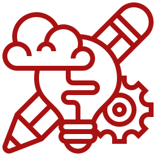

Minhas Especialidades.
Programações
Conhecimento significativo em linguagem C, python e gerais. Com dedicação enorme para o ampliamento.

Design
Grande presença em diversas áreas da publicidade, com aplicações em design gráfico e desenvolvimentos web.
Lógica
Desenvolvimento lógico qualificado e em constante evolução, diante de dedicação e prática.
Análise de dados
Aprofundamento considerável na área e facilidade com a gestão numérica. Por já ter trabalhado e aprofundado neste meio.
Comunicação
Experiência e simpatia na comunicação com clientes e expoentes nas empresas, por conta de meses na conjuntura de uma empresa.
Criatividade
Mente ampla e com presença em várias ideologias bases para o ampliamento em ideias.